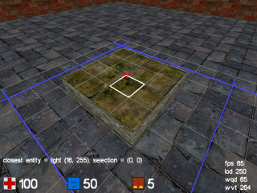
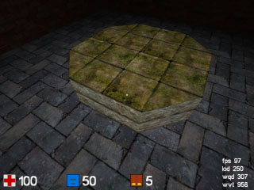
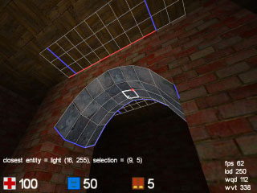

| Mapping basics tutorial |
| To start mapping, press the "e" key (editmode). You will see a
grid being drawn whereever you point. The small squares are a single cube unit
(16x16 quake units), and the blue lines indicate 8 unit boundaries (128x128
quake units). Click (& drag) the cube the crosshair is in to select an area
(you will see an orangy bounding box indicating your selection).
Selecting things in the 3D world may be weird at first, experiment in an existing map with selecting various size of areas and bits or geometry. To select cubes occupied by walls, you drag the cursor over the wall, and the selection box will show at the edges of the wall. Remember that you can fly through the map while dragging, so you can actually fly to the other side of a wall to complete the selection. It is best if you try this in combination with texture manipulation, so you can verify you selected what you intended.  Once you have a selection, you can modify it in all sorts of ways. Press [ and ] (raise/lower floor) on different selections to get a feeling for editing in 3D. If while editing, you forget some useful command or what key it is bound to, use the "editing" menu, which contains most editing operations. To make a new map from scratch, use the "newmap" command. Just type "newmap 7" for now, or pick one from the menu. Cube maps are fixed size as you create them, so if while editing it grows towards its boundaries at some point you won't have any space left (you can then use the "mapenlarge" command to fix this). if you made a new map, you will now see a large dark square room. This is the area you build your map in. There are several ways to make it brighter, for example your could place some lights (see below), but for now its probably easiest to use the "fullbright" command (console or menus) which makes the map bright until you load it again, or until you press "recalc" (R). Now lets make a rough layout of your map. The most important command is for making fully solid walls, which has the default key F. Make some selections, and make them solid. At this point its already good to keep in mind that selections on multiples of powers of 2 are more efficient for cube to render than arbitrary sets of cubes, read the tip about "editing on the grid" below if you want to know more. If you want to make something not-solid (space) after you made it solid, simply select the solid and press G. next you probably want to make some floor level changes and some stairs here and there, as all on one level makes for a rather boring map. select areas in between the solids you created and change their height (keys [ and ]), and also experiment with ceiling heights (keys O and P). At this stage we have a rough layout, it may probably be wise to save your map (do this frequently). If you just say "savemap blah" in the console, it will end up as "packages/base/blah.cgz" (.cgz is the cube map format, which is short for gzipped-cubemap), and you will be able to reload it using just "map blah". If you want to save it in a non-default package (base), you specify its directory, i.e. "savemap mymappak/blah" saves to "packages/mymappak/blah.cgz". Loading maps works again similarly. The packages are units of distribution (single projects), each of which can contain one or more maps, new textures etc. The "base" package will contain all standard maps and single maps not part of a bigger project (see map/savemap). If you are satisfied with the layout at this stage, and you are pretty sure that you won't add extra areas, this may be a good time to go round the edges of the map and make all unused areas solid. Remember, solids block visibility and do not need to be rendered, so its good to make as much solid as you can. If you make an area solid and you still want to build something there, you can always make it not-solid again (G). Sometimes to do this you will need to select an area into the "void" (the blue area outside the map), where there is no editing grid (because cube can't know where you are "pointing"). You can select something here by simply starting your selection inside the map, and flying out into the void, where the camera itself will function as the other end of the selection. Try it. Now lets do some texturing. Note that there is no texture alignment, so in most cases it may be easier to texture as you do the layout, because you will have the right selections already and can build the geometry to suit the texture alignment, but its quite easy to do afterwards as well, especially given cube's global texture replace feature. Maybe you have been building the map using default textures sofar, and were actually planning to use different textures. Select a large area of floor, and press "insert" repeatedly, you'll see that you are browsing through possible textures. If you browse past a texture and want to go backwards, press "delete" and you'll browse in the reverse direction. When you are satisfied with the texture, select a different area of floor and press "insert" again... suprise, your last selected texture is the first one to come up. And your before last selected texture 2nd, and so forth. This is the way of texturing: after a while, all the textures you are actually using for the map will be a few keypresses away. The system works the same for walls ("home" and "end"), ceilings ("pgup" and "pgdn"), and upper walls ("numpad 7" and "numpad 4"). The difference between "wall" and "upper wall" is something that comes into play when you are texturing non-solid (space) cubes whose floor/ceiling sides are visible, such as a higher platform. So you have found an ideal floor texture which you want to use for most of the map, do you now need to go and select all floors and change them? not at all. Simply change one area of floor from one texture to another, and do a "replace" (console or menus): cube will repeat your last texture change thruout the map, i.e. all floor textures with the same old texture will get the same new texture. Do the same for your most common wall, upper wall and ceiling textures: this way you have a good default to work from. Before we go adding detail, it may be a good idea to go add entities, to be able to test the map and make sure we do not need more fundamental layout changes. To add an entity, make a selection of 1 cube on the floor where you want the entity. The precise location of the entity will be where the red dot is as you make the selection. For those entities where the Z coordinate matters, it will be the same as camera eyeheight at the moment you create it, similar for those entities that use a yaw (direction) such as the "playerstart" entity, it will be that of the camera at the moment of creation. To actually create the entity, it is probably easiest to use the editing menu for now ("insert entity..."), but you can also use the console command "newent". Once created, you'll see a blue sparkly at its location, and you will be told its type on the HUD if you fly close enough to it. If you made a mistake, simply use the "delent" command (key x), and the entity show on the HUD will be deleted. For a DM/DMSP map: Place some "playerstart" entities, suggested quite a few of them, i.e. from 5 or so in a really small map up to 15 in really big ones. Place some ammo... remember to not just place excessive amounts: ammo spawns VERY quickly (4 to 8 seconds depending on player load), and not having endless ammo forces the player to move around the map more and use different weapons, rather than just using the one she is most effective with all the time. Normal health items... suggested from 3 or 4 for a really small map to 8 or more in really big ones. The items "boost", "yellow armour", "green armour" and "quad damage" all suggested 1 item, or maybe multiple green armours or boosts in bigger maps. Add some teleports if you want, but only if they really make sense for connectivity and gameplay. For an SP map, place just a single "playerstart", but preferably in an area with some space around it for future coop play. place monster entities thruout the map (take good care of position & orientation: they determine when the monster will wake up). Ammo & health placement should be finely tuned to match monster load, not too much, not too little. By the kinds of ammo you give the player and when you can influence the gameplay a lot. Placement of armours & quad is up to you, but unless you stage massive battles, don't put too many of them in. Additionally, you may want to put quite a few trigger entities in, they can make the map feel less linear (doors whichs need to be triggered to open), create monster "traps" etc (trigger opens walls which have monsters behind them), etc. Now lets place some lights, too. Press R (recalc) to get rid of the fullbright, and light the map step by step. Lighting in cube takes some care to make look good, as the default light is currently just cyclindrical rather than spherical (this may change in the future). Start by placing lights in the area that should "naturally" be bright (such as where you placed sky texturing). Remember that its much easier to create good looking light using small light source (8/12/16 radius) even in big areas, instead of just padding out your map with 32 radius lights (which will make it all look bland). Do not be afraid to leave some areas/corners quite dark (or put low brightness lights in them), contrast in lighting is what makes a map look atmospheric. Experiment with sizes and placement, and what effect they have on nearby walls (use "delent" to your advantage :) We now have a playable and lit map, but it still looks rather cubic and boring: we need to add some detailing! of course one route to detail you have a already learned: texturing. Cube comes with a great variety of trims and other detail textures that can spice up a map, remember that where you place textures (and other detail) can have an equally big effect on map rendering efficiency than the location of solids, so its good if you are aware of the "editing on the grid" rule. Even if you don't care about efficiency, there are no texture alignment tools in cube, so the only way to nicely align larger textures is to located them neatly on the grid. One of the easiest ways to make a map look less cubic is use the "corner" tool(key K), which makes 45 degree corners on walls, platforms, and ceilings. Go to a corner where 2 walls meet, and select the cubes in the corner (either just one, or 2x2, or 4x4), then press K. If all went ok you should now have build a corner. If for some reason it did not give the expected result, remember that for "corner" to work it needs to have exactly 2 solids of the same size as the corner next to it.  You can also create corners on platforms etc. For example, select an 8x8 area of cubes and raise it a few units above its surroundings. now select a 2x2 area at the corner of this 8x8 area and press K. Do this with all 4 corners and voila: and octagonal platform. The way non-solid corners work is similar to solid corners: they pick the the 2 highest (or lowest, in the case of a ceiling) neighbours the same size of the corner, and use them to build a corner against. Note that a corner works for floor and ceiling at the same time, i.e. if you lower the ceiling above the 8x8 area, you'll get corners on that as well. At this stage, remember that if you get unexpected results you can always "undo" (press U) directly after you changed something. To clean up something that you can't undo anymore, the easiest is probably to select the area an press G (make space), which removes any special cube types such as "corner" etc. The most powerful, but also most difficult to understand way to create nice detail in a map is using the "heightfield" or "slope" feature. This allows you to build sloped surfaces of any kind on either floor or ceiling, allowing your to create things like arches etc. There are two types of heighfield: floor and ceiling, which are mutually exclusive with the other cube types (solid/space/corner). First, lets create an easy prefab heighfield arch, to get a taste for what heighfields can do, before diving into technicalities. Make two solid walls (4x4 each) on either side of a 8x4 area of space in the middle of the room. Now select the 8x4 area, and lower it 4 units from the ceiling, so it looks like a cubic arch already. if you want, change the ceiling texture to something with a clear structure, so you can more easily see the effect. Now press I to make the area a ceiling heightfield, followed by typing "arch 2" in the console. if all went well, you should now see an actual arch spanning the 8 cubes area, and have a slight rounding in the 4 cubes direction as well (this was caused by the "2" parameter, supplying "0" would have just made the arch in 1 direction only). Note that cubes that have a floor or ceiling heighfield are marked by green gridlines.  so how does this all work? for each cube in a map, a so called "vertex delta" value is stored, which determines the offset for heightfields off the normal floor or ceiling level. For normal non-solid cubes, these values are simply ignored, but for heighfields they are not. This is why the difference between heighfield or not matters, otherwise there would be no way to make the arch stop (notice that whereever the arch touches a non-heighfield area, the side of the arch has correct polygons on it (called "caps")). The vertex delta of a cube specifies the delta for the top-left corner vertex (i.e. where the red dot is on a cube), so to determine the full orientation of a single heighfield cube, it needs 3 more vertex deltas besides its own, those to the right and below of it. That's why our 8x4 heighfield requires the vertex delta values of 9x5 cubes! To try this out for yourself, first select a single cube somewhere in the middle of the arch, and press keys 8 and 9 (change vertex delta). You should see the vertex at the red corner of your selection move up and down. This way you can change everything about the arch. You can change multiple vertices at once with bigger selections, but remember that only the top-left corner vertices of your selection are affected, so to move 2x2 cubes in a heighfield, spanning 3x3 vertices, you thus need the correct 3x3 cube selection (use the red dot as anchor). Also try, as an execise, to affect vertices on the outer edges of the arch (hint: you may need to select a cube on the ceiling next to it, depending on orientation). Last but not least, notice a few things about pressing keys 8/9: first of all, they move a quarter unit at a time, giving you more precision. Second, notice that the original ceiling level is the base level past which you cannot move: all vertex deltas are an offset away from the ceiling or floor. These are the basics of cube editing, if you tried out the above you should be ready to make any map. Check out the tips below, use the editing reference , and experiment!
|
| Mapping tips |
This explains how to make the most from a map in cube. Cube is
very strong at certain things, yet very weak in other areas, in different ways
you are used to (from, say, quake). To make a good map, keep the following in
mind:
|